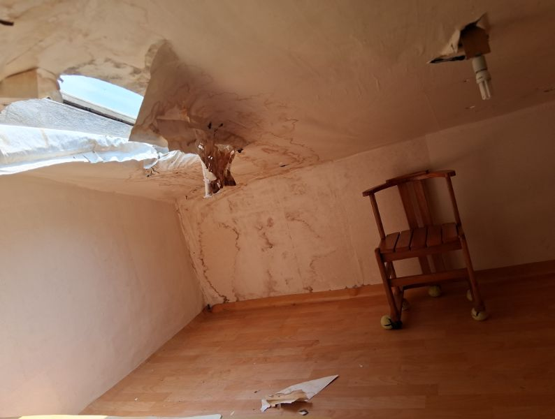
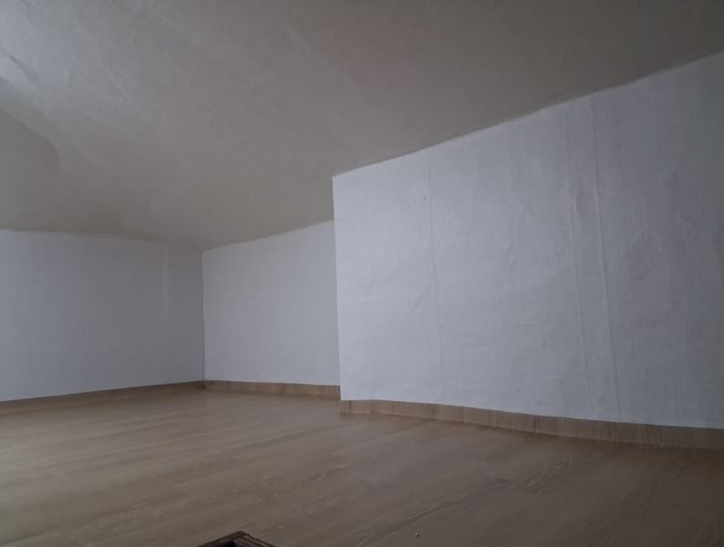

정리수납 · 생활집수리
정리부터 집수리까지, 우리 집에 필요한 변화를 만듭니다.
생활공간을 정돈하고 불편한 곳을 고쳐 더 편안한 일상을 함께합니다.
정리수납 2인 1조
현장 확인 후 견적 안내
정리부터 집수리까지, 우리 집에 필요한 변화를 만듭니다.
생활공간을 정돈하고 불편한 곳을 고쳐 더 편안한 일상을 함께합니다.
생활공간을 정돈하고 불편한 곳을 고쳐, 더 편안한 일상을 함께합니다.
 BEFORE
BEFORE AFTER
AFTER옷장·수납장·주방 등에 쌓인 물건을 용도와 생활 습관에 맞게 분류하고 정리합니다. 자주 쓰는 물건은 쉽게 찾고, 정돈된 공간은 편하게 유지할 수 있도록 돕습니다.

BEFORE
AFTER조명·수전·문 등 생활시설의 고장과 불편한 부분을 살피고 필요한 수리와 보수를 진행합니다. 방수·발수 등 외부 보수도 현장 확인 후 함께 상담해 드립니다.
※ 작업 범위·일정·비용은 서비스와 현장 상태를 확인한 후 안내해 드립니다. 서울시 안심집수리(지원사업)는 별도 페이지에서 안내합니다.